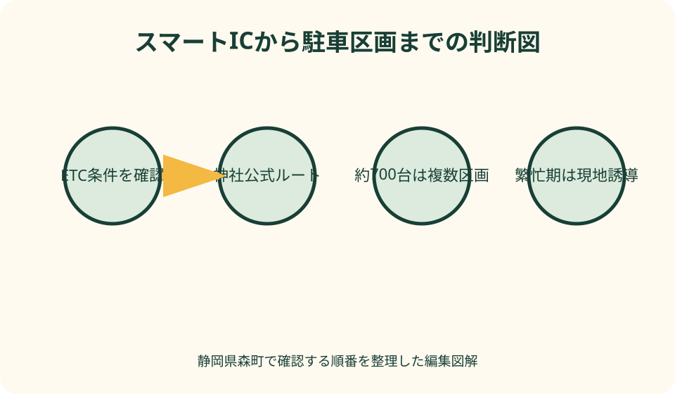
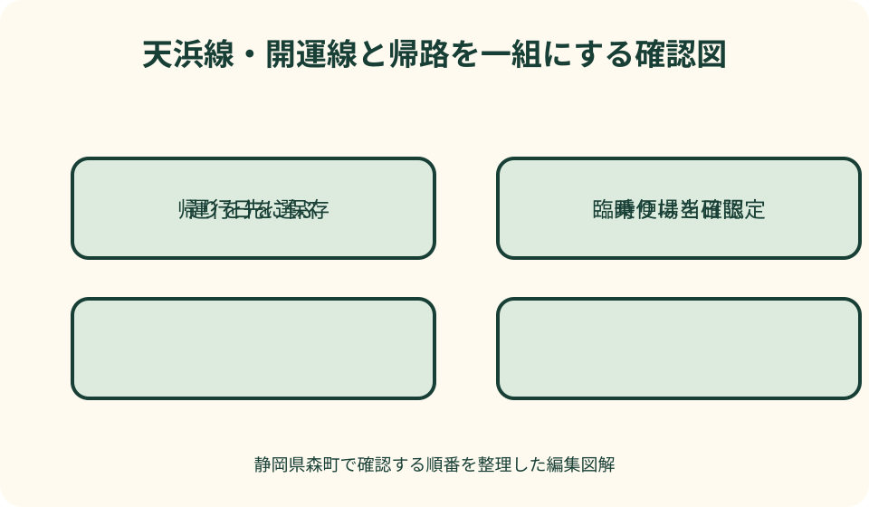

小國神社・交通案内｜最終確認 2026-08-10
静岡県森町・小國神社のアクセスと駐車場｜車と開運線で迷わない参拝準備
小國神社へ車で向かうなら、通常時は最寄りの遠州森町スマートICと神社公式の駐車場図を確認します。ただし、公式の「無料駐車場約700台」は、いつでも全区画へ自由に入れるという意味ではありません。紅葉や正月などは交通規制、駐車区画の開閉、案内員による誘導があり得ます。公共交通なら、JR袋井駅または天竜浜名湖鉄道の遠州森駅から秋葉バスの小國神社・開運線を検討し、固定時刻ではなく訪問日の運行カレンダーを確認します。

最初に車か公共交通かを決める
小國神社は静岡県周智郡森町一宮3956-1に鎮座します。神社公式は本宮山の山麓、清流宮川のほとりに広い神域があると案内しており、町なかの駅前施設へ行く感覚とは異なります。到着直前に交通手段を考えるのではなく、車で駐車区画まで入るのか、鉄道と路線バスをつなぐのかを出発前に一つ決めます。
車は荷物が多い家族や複数世代で動きやすい一方、紅葉、正月、七五三、催しの日には周辺道路と駐車場が混みます。駐車台数が多いことだけで車を選ぶと、退出渋滞や参道までの歩行を見落とします。運転者が混雑に耐えられるか、同乗者が離れた区画から歩けるかまで含めて判断します。
公共交通は駐車場所を探さずに済む一方、運行日、便数、乗り場、帰りの時間に制約があります。秋葉バスの小國神社・開運線は、毎日同じ間隔で走る前提の路線ではありません。公式サイトの運行カレンダーと訪問日のお知らせを開き、往路と復路が一組になる日だけ旅程へ入れます。
検索地図は位置確認に役立ちますが、繁忙期の臨時規制や区画閉鎖を常に反映するとは限りません。神社公式の交通案内、駐車場図、当日のお知らせを先に読み、地図アプリはその経路を補助する道具として使います。現地で案内が異なる場合は、画面上の最短線より標識と案内員を優先します。
遠州森町スマートICから車で向かう
小國神社公式は、新東名高速道路の遠州森町スマートICを神社に最も近いインターとし、通常の目安として約7分と案内しています。この数字は混雑や信号待ちを保証する到着時刻ではありません。繁忙期、事故、工事、悪天候の日は余白を持ち、祈祷や待ち合わせの直前にICを出る予定を避けます。
遠州森町スマートICはETC専用です。森町公式によると、ETC車載器を搭載した車長12メートル以下の車が対象で、24時間、東京方面と名古屋方面の全方向へ出入りできます。レンタカーや家族の車では、車載器の有無だけでなく、利用可能なETCカードが正しく入っていることまで乗車前に確認します。
スマートICのゲートでは、一般的なETCレーンを通る感覚で徐行通過しません。開閉バーの手前で完全に停止し、通信後にバーが開いたことを目で確かめて進みます。カードエラーや利用条件の不一致が起きたときは、後退や急な転回をせず、現地表示とインターホンの案内に従います。
神社公式の案内は、スマートICを出た後、広域農道と案内看板を使って小國神社方面へ進む道筋を示しています。交差点名や曲がる位置は、工事や規制で運用が変わる可能性があります。出発前に公式地図を一度見て、運転中は道路上の小國神社案内と臨時標識を読みます。
遠州森町スマートICを利用できない車は、無理に入口へ向かいません。神社公式は新東名の森掛川IC、東名の袋井ICからの経路も掲載しています。ETCを使えない場合や特殊な車両では、係員のいる料金所を使える経路を道路会社の最新情報で選び、所要時間に余裕を加えます。
約700台の無料駐車場を正しく読む
小國神社公式の交通案内には「無料駐車場約700台」とあります。これは参拝者にとって重要な規模の目安ですが、一つの平面駐車場に700台分が並ぶという意味ではありません。正面側を含む複数区画へ分かれているため、どの区画から参道へ入るかで歩く距離と退出方向が変わります。
駐車場図には参道入口までの徒歩目安が示されます。正面に近い区画だけを狙って周回するより、案内された空き区画へ一度で入り、同行者の歩行を支える方が安全です。高齢者、乳幼児、杖を使う人がいる場合は、運転者だけで判断せず、降車後の道のりを家族全員で共有します。
公式ページは、期間によって利用できない駐車場があることも明記しています。掲載図の作成時点や工事中区画の注記は更新され得る情報です。「以前はここへ停めた」という記憶を当日の利用許可へ置き換えず、訪問直前の交通案内と現地入口表示を確かめます。
正月、七五三、紅葉などの繁忙期だけ開設される区画がある一方、催しの会場や運営上の理由で一部が使えない日もあります。約700台という総数から空き台数を推測できません。駐車場の入口が閉じていたら、路肩で待機せず、案内員が示す次の区画へ進みます。
大型バスは乗用車と同じ区画へ入れません。神社公式は大型バス用に第2駐車場を案内し、入口の安全ロープの扱いも説明しています。団体の幹事は運転手任せにせず、車種、到着予定、降車場所、入庫方法を事前に神社公式で確認し、乗客にも集合場所を伝えます。
繁忙期は最短経路より現地誘導を選ぶ
神社公式は、紅葉シーズンや正月など混雑が予想される場合、アクセス区間の一部で交通規制が行われる場合があると注意しています。通常日に使えた曲がり方や進入口が、その日も使えるとは限りません。カラーコーン、臨時看板、警備員の合図を早めに読み、直前の車線変更を避けます。
混雑列ができていても、生活道路や農道へ迂回して先回りしません。森町一宮には住民の生活、農作業、路線バスの通行があります。地図アプリが細い近道を示したときは道幅と現地規制を見て、神社が案内する主要経路へ戻れる安全な場所で経路を組み直します。
満車時の家族の役割も決めます。運転者は誘導に集中し、同乗者は駐車場図、参道入口、帰りの集合場所を確認します。走行中に運転者がスマートフォンを操作せず、必要な連絡は停車後に行います。子どもだけを先に降ろしたり、路上で荷物を広げたりしません。
駐車後は区画名や目印を写真と文字で残します。境内は広く、往路と復路で見える景色が変わります。「鳥居の近く」のような曖昧な記録ではなく、公式図の区画名、列、近くの案内板を同乗者へ送ります。携帯電話が使いにくい場合に備え、離れたときの集合時刻と場所も決めます。
参拝を終えたら、正面側へ戻る前にトイレ、荷物、同行者の体調を確認します。神社公式は参道入口右手、正面駐車場に隣接するお手洗いを案内していますが、繁忙時は待ち時間も考えます。退出列へ入ってから忘れ物に気づかないよう、車へ戻る前に一度立ち止まります。

天浜線と秋葉バス開運線をつなぐ
鉄道で森町へ入る場合、天竜浜名湖鉄道の遠州森駅が小國神社・開運線の乗り場の一つです。東海道線側からは掛川駅で天竜浜名湖鉄道へ乗り換える経路を検討できます。列車の接続が短すぎる旅程を組まず、乗り場移動、切符、トイレの時間を含めて考えます。
JR袋井駅からも秋葉バスの開運線で小國神社へ向かう経路があります。秋葉バス公式は袋井駅北口、遠州森駅、遠州森町バスターミナル、小國神社の乗り場案内を掲載しています。鉄道の出発地だけで決めず、往復の接続、乗換回数、帰宅方向を比べて入口駅を選びます。
開運線は運行カレンダーによって日ごとの運行状況を示しています。この記事に発車時刻を固定して書かないのは、季節、曜日、改定、催しで条件が変わるためです。訪問日のカレンダーを選び、時刻表、運賃、支払方法、乗り場図を秋葉バス公式の同じ確認時点でそろえます。
秋葉バス公式は、整理券を取る支払手順や、点検などにより専用車両以外で運行する場合があることも案内しています。特別仕様の車両を目印にし過ぎると、通常車両の便を見落とす可能性があります。行先表示と停留所名を確認し、不明なら乗車前に乗務員へ尋ねます。
森町公式の公共交通案内は、鉄道、民間路線バス、タクシーなどの確認入口をまとめています。バスの往復が成立しない日は、行きだけ乗って帰りを考えるのではなく、訪問日を変える、タクシーを事前相談する、同行者の送迎と組み合わせるなど、出発前に完結する代案へ切り替えます。
臨時運行と無料送迎を通常便と混同しない
小國神社や周辺の催しに合わせ、秋葉バスが臨時便を案内することがあります。臨時便は、その催し、その日、その運行条件に限られる情報です。過去のお知らせに便が載っていても、次の紅葉期やライトアップに同じ便が走る根拠にはなりません。公式トップのお知らせを訪問直前に確認します。
臨時便がある日も、帰りの最終候補を一つだけにしません。催しの終了前に乗り場へ戻る便、予定どおり最後まで滞在する便、混雑で乗れない場合の連絡先を分けます。増便があるから必ず座れる、全員が乗れるとは考えず、高齢者や子どもには待ち時間の防寒・暑さ対策を用意します。
神社公式のFAQは、遠江一宮駅からの徒歩目安と、各月1日・15日の無料送迎について案内し、利用時は事前に問い合わせるよう求めています。これは秋葉バス開運線とは別の仕組みです。運行日、利用方法、乗り場を神社へ確認せず、駅で待てば必ず来る送迎として扱いません。
遠江一宮駅と遠州森駅は名称が似ていますが、同じ駅ではありません。無料送迎の案内に出る駅と、開運線の主要乗り場を取り違えると、予定した車両に乗れません。鉄道区間、降りる駅名、接続する交通名を一行にして同行者へ送り、音だけで覚えないようにします。
帰路から逆算して境内で過ごす
車で来た人は、到着時に帰路の高速方向を確認します。東京方面か名古屋方面か、遠州森町スマートICを使うか別のICへ向かうかをナビへ保存します。参拝後の暗い時間や渋滞中に家族会議を始めず、運転者が休憩してから出発できる余白を取ります。
駐車場から退出するときは、入ってきた道を逆に進めるとは限りません。一方通行や繁忙期の出口誘導があれば、現地の矢印へ従います。ナビが反対方向を示しても、駐車場内で転回したり誘導員の合図に逆らったりせず、安全に一般道へ出てから経路を再検索します。
バス利用者は、境内へ着いた時点で帰りの乗り場を確認します。降車場所と乗車場所が完全に同じとは決めつけず、停留所表示と秋葉バスの乗り場図を見ます。参拝、宮川沿い、ことまち横丁を回る前に、戻る時刻の目安と中止する順番を決めます。
鉄道への接続は、バスが定刻どおり走る前提だけで組みません。道路混雑が見込まれる日は、乗換に余白のある列車を候補へ加えます。指定席や遠方の接続がある人は、間に合わない場合の変更条件も先に確認し、参拝時間を短くする判断を失敗と考えません。
家族の一人が車、別の人が公共交通で集合する場合は、正面鳥居だけを待ち合わせ場所にしません。駐車区画、バス停、参道入口のどこで会うかを地図上で指定し、到着がずれた際の連絡方法を決めます。繁忙期に車を路上へ停めて迎える予定は作りません。
良い点：複数の入口を選べる
車では最寄りの遠州森町スマートICに加え、森掛川ICや袋井ICも公式に案内されています。ETC条件、出発地、道路状況に応じて入口を選べることは大きな利点です。ただし、通常時の所要目安だけを比較せず、当日の規制と帰路まで含めて選択します。
約700台という無料駐車場の規模は、通常の参拝を支える基盤です。複数区画があるため、正面付近が混んでいても別区画へ誘導できる余地があります。この良さを生かす条件は、来訪者が近い場所へ固執せず、開設中の区画と現地の流れに従うことです。
公共交通では、JR袋井駅側と天浜線遠州森駅側から開運線へつなぐ選択肢があります。車を運転しない人も参拝経路を検討でき、繁忙期には駐車場探しを避けられます。運行日が限られるため、自由度の代わりにカレンダー確認が必要だと理解して使います。
公式情報が役割別に分かれていることも利点です。神社公式は境内と駐車場、森町公式はスマートICと町の交通、秋葉バス公式は運行日と乗車方法を担当します。一つのまとめ記事だけで完結させず、判断ごとに情報の持ち主へ戻ることで、古い案内を避けられます。

注文したい点：繁忙日の変更を一か所から追えるようにする
駐車場の約700台表記は分かりやすい一方、当日に開いている区画数までは示しません。工事、催し、季節運用で閉じる区画がある日は、通常図と当日変更を一画面で照合できる案内があると、入口手前で迷う車を減らせます。利用者側も総数だけを切り取って拡散しない配慮が必要です。
交通規制のお知らせは、神社、町、道路、バスの各サイトへ分かれる場合があります。参拝日を入力すると、駐車場変更、道路規制、バス臨時便、鉄道接続の確認先が一つの一覧になると便利です。現状では、読者が少なくとも三つの公式情報を順に開く必要があります。
公共交通は時刻表だけでなく、運行カレンダーの記号、支払方法、乗り場を組み合わせて初めて使えます。初めての人向けに「日を選ぶ、便を見る、乗り場を見る、帰りを保存する」という順序が常に同じ位置に表示されれば、臨時便と通常便の取り違えを減らせます。
検索地図の利用者へ、繁忙期は現地誘導を優先することを神社周辺の道路上でも早めに伝えられると安心です。曲がり角の直前だけでなく、主要交差点へ入る前に満車区画や迂回方向が分かれば、急停止を避けられます。来訪者は案内を見落とさない速度で走る責任があります。
代案・結論：出発前、到着前、帰る前の三段階で確認する
出発前は、車ならETC、利用IC、神社のお知らせを確認します。公共交通なら運行日、往復便、乗り場、支払方法を確認します。同行者へ画面のスクリーンショットだけを送らず、確認日と公式ページのURLも共有し、変更が出た際に同じ情報へ戻れるようにします。
到着前は、車なら通常の駐車場図から現地誘導へ判断を切り替えます。バスなら降車時に帰りの乗り場を確かめます。どちらも参拝開始を急がず、トイレ、歩行、天候、混雑を見て、宮川沿いや買い物を予定から外す基準を決めます。
帰る前は、車の区画、出口方向、IC、運転者の疲れを確認します。公共交通は乗り場、発車案内、鉄道接続を再確認します。忘れ物を探すために出発を遅らせないよう、授与品、傘、子どもの荷物、携帯電話を一か所へまとめます。
混雑が大きい場合の代案は、無理な近道ではありません。到着を遅らせる、参拝以外を減らす、別日に変える、公式に案内された別ICを使う、往復できる日に公共交通へ変えることです。小國神社へ着くことだけでなく、安全に森町を離れるところまでを一日の計画にします。
大石の視点：駐車台数より帰れる動線を見る
私（大石）は、小國神社のアクセスを案内するとき、最初に「約700台あるから大丈夫」とは言いません。総数は施設の規模を知る材料ですが、その日に開く区画、参道まで歩ける距離、退出の向きが家族に合うかは別の判断です。数字の後ろにある動線を確認します。
森町の道は、観光客だけのものではありません。混雑を避けようとして細い道へ入ると、住民、農作業車、通学、路線バスの移動へ影響します。遠回りに見えても公式案内と現地誘導に従うことが、参拝者自身と地域の双方にとって確実です。
車を使わない選択も、単に環境に良いという一言では勧めません。開運線の運行日と帰路が成立し、同行者が乗換と待ち時間に対応できる日に限って実用的です。条件が合わない日は、送迎、タクシーへの事前相談、訪問日の変更を同じ価値の選択肢として置きます。
この記事は駐車場の空きやバス運行を保証するものではありません。2026年8月10日に、神社、森町、秋葉バスの公式情報を確認して作成しました。訪問日は公式ページをもう一度開き、通常案内、当日変更、帰路の三つがそろってから出発してください。
公式情報・確認先
掲載内容は次の一次情報を基礎に整理しました。営業、料金、催し、交通は変わるため、出発前または手続き前にリンク先で最新情報を確認してください。
- 交通案内（遠江国一宮 小國神社、2026-08-10確認）
- ご参拝の皆様へ（遠江国一宮 小國神社、2026-08-10確認）
- よくあるご質問（遠江国一宮 小國神社、2026-08-10確認）
- 観光（静岡県森町、2026-08-10確認）
- 新東名 遠州森町スマートIC（静岡県森町、2026-08-10確認）
- 森町の公共交通について（静岡県森町、2026-08-10確認）
- 小國神社開運線（秋葉バスサービス株式会社、2026-08-10確認）